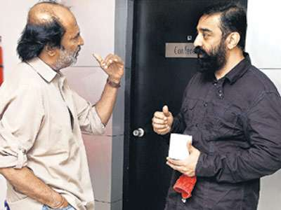

Your passion
Your Goal
Your Career
- A walk-through
Pragyan Social Responsibility, Pragyan '13
A Quote to begin with
In the road of life, you will see a lot of people walking along on the path. Don't just follow them! Take your own path! You will see a whole new world!
What actually matters?!
These are the keypoints to be considered before deciding any career, before pursuing your future goals
- Your Passion/Interest (Actually thats all that matters!)
- Scope/Opportunities
- Does it match your strengths?
- Are you really interested?! (Ask again!)
Because admiration is different from passion!
So what are the options available?
Doctor | Engineer
Thats it?!
No!
Not at all!
Confused?!

This might give a better picture!
There are still a lot of courses left out there!
Search online!
Ask others!
Go explore outside and
try to find your passion!
Few online links that may be useful:
- http://www.chakreview.com/Education/Best-career-options-after-12
- http://www.buzzle.com/articles/list-of-different-careers.html
- http://www.epinions.com/content_4813004932?sb=1
- http://www.dnaindia.com/academy/report_want-to-study-medicine-engineering-or-want-to-be-special_1686835
- http://www.worldcolleges.info/TamilNadu/tamilnadu-collegelist.php
Few sites that you might lookup:
And another link..
(A clear chart with all details for many entrance exams!)
http://goo.gl/TngqV
Do a SWOT analysis!
Later, We'll discuss about this in detail!Archaeology
- Interested in History, Mystery?
- Curious about Heritage sites, Ancient temples, Angkor wat, Aadhichanallur?
- Inspired by Harappa and Mohenjadaro, Indiana Jones?
Fundae: Did you know Erumbeeswarar Temple in Thiruverumbur is a heritage site?
Find yourself at,
Banaras Hindu University, ASI, many more!
Find your passion at,
- Archaeological Survey of India (ASI)
- Indian Council of Historical Research (ICHR)
- National Museum
Refer to,
Liberal Arts
- Have varied interests?
- Interested in literature
- Creativity, your own expressive methods?
- Inspired by Mano, Pappaiyya?
Refer to,
Political Science
“Only those who are crazy enough to think they can change the world, end up changing the world”- Want to make an impact in society?
- You have that leader in you?
- Be the change you want to see in the society!
Find your passion at,
- TamilNadu Arts & Science College
- Madras University
- Loyola
- Annamalai University
- Delhi University
Refer to,
Photography
- Passion, Interest, Films?
- Are you the Srikanth from Nanban?
- Remember that photographers were the crucial reasons behind Vietnam war’s start/end, Korean Revolution, European Revolution!
Refer to,
- http://www.chillibreeze.com/articles/top-10-photography-schools-in-India.asp
We do have a Photography Association in our Institute. It goes by the name "Pixelbug"
Journalism / Mass Commn.
- News, Travel, Reaching the people
- Have the power to bring the change!
Find your passion at,
- Pondicherry University
- Asian College of Journalism, Chennai
- Madras Christian College, Chennai
- Annamalai University
Refer to,
Law
- Do you live by a set of rules?
- Do you want to bring order to the society?
- Be the next Gandhi, Ambedkar!
Find your passion at,
- Madras University
- Dr. Ambedkar Law University
- Govt Law College, Trichy, Thirunelveli, Coimbatore
Refer to,
Army, Navy, Airforce
- Service, Patriotism, Bravery, Intelligence, Dedication
Find your passion at,
- National Defence Academy, Khadakvasla (W. Bengal)
- Indian Military Academy, Dehra Dun (Uttaranchal)
- Rashtriya Indian Military College, Dehra Dun (Uttaranchal)
- Officer’s Training School, Chennai
Refer to,
Sports & Physical Education
Change the ill-state and join the league!
Find your passion at,
- Madras University
- Bharathiyar University, Coimbatore
- Madurai Kamaraj University, Madurai
Refer to,
Animation
- Multimedia, movies, design?
- Be on the names of Disney
- Start the next Pixar!
Refer to,
Cinema, Dramatrix, Entertainment
- Acting, Direction?
- Become the next Kamal haasan, Mani Rathnam, Shankar!
Find your passion at,
- Madras Film Institute
- Chennai film School
- South India Film Institute
Commerce / Economics / Finance


- Feeling bad about how our economy works?
- Want to drive the future companies and societies?
- You have a solution for inclusive development?
- Become the next Amartya Sen!
Find your passion at,
- Madras Christian College
- Pachaiyappa's
- Presidency College
Science
- Inspired by Science?
- Curious of Current Discoveries, LHC, string theory, nano-technology?
- Want to do your research?
- Can even join engineering in future!
- Nobel Prize, why not us?
Find your passion at,
- Chennai Mathematical Institute
- IISER [Indian Institute of Science, Education, Research], Pune
- IISc, Bangalore
- TIFR, Mumbai
Refer to,
Vocational Courses
Don't forget the Vocational Courses, Correspondence courses from IGNOU and many other Universities!
There are lots of options! Choose wisely!
Career Prospects
[Take these into consideration!]- Passion
- Work-Life Balance
- Work Satisfaction
- Impact on Society
- Work Place and Perks
- Climbing the corporate ladder
THE END
BY Sugavanesh B
DISHA, A PSR Initiative.
Talk on
Entrance Examinations
- Mr. Murali, Seeker's Education
Engineering
- A Walk Through
Finishing touch :)
We are all trying so hard to be mediocre in life with our tasteless ambitions and goals!
Go, Find your passion!
And challenge the world of mediocrity!